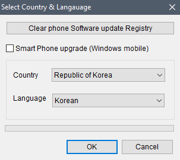
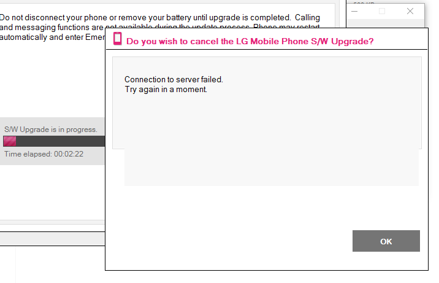

Instalar Stock rom android 4.4.2 KITKAT para o LG L35 D157F
Veja agora como reinstalar a versão de fábrica no LG L35 e resolver erros como "O Processo.System Parou, travamentos, lentidões loop infinito" ou se você instalou uma Custom rom e não se agradou, com esse procedimento retornarás ao que era antes.
Para esse tutorial você irá prescisar do LG Flash Tool 2014 Firmware LG L35 D157F Drivers
A coversa está boa mas o que é bom mesmo é o tutorial, então, vamos lá!
- Você deve baixar os 3 arquivos listados acima, no seu pc, extraia os arquivos e o "LG Flash Tool 2014.rar" e os drivers USB "LGMobileDriver_WHQL_Ver_4.2.0.rar" para que o pc reconheça seu aparelho.
- Vamos utilizar o programa Lg Flash Tool 2014 para realizar a instalação da firmware, então vá no diretório onde foi realizado o download e o execute.
- Após a instalação do Flash Tool vamos partir para o telefone.
- Mas antes, abra o programa.
- - Desligue o aparelho.
- Vamos por o L35 em modo Download/Firmware Update.
- Com o aparelho desligado pressione ao mesmo tempo as teclas de VOL + e VOL - e conecte o cabo usb, lembrando que o cabo já deve está conectado ao computador.
- No programa Flash tool clique no icone da "Pasta" para escolher a firmware 'www.soinroms.com_D157f10c_00.kdz' .
- Após escolher o arquivo da firmware clique em CSE FLASH e em START feito isso aguarde esta tela. 
- Confirme em Ok, não se preocupe quanto ao país e a linguagem, agora aquarde o processo terminar. 
- É normal que quando iniciado o processo de flash ocorra esse tipo de erro, mas calma, o processo de instalação está rolando, apenas deixe que o mesmo termine e não clique nesse "OK" que a mensagem apresenta.
- Após tudo isso o dispositivo irá reiniciar com o sistema novinho, enquanto o mesmo não inicia, saborear uma delicious barra de cereal ^0_0^.
No PC
No Celular

Ficou com alguma dúvida? Obteve erro em algum dos procedimentos? Então fique livre a deixar seus comentários logo abaixo.